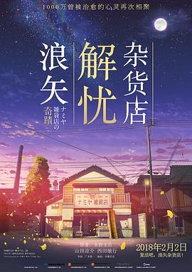

浪矢解忧杂货店 / ナミヤ雑貨店の奇蹟
又名：解忧杂货店 / Miracles of the Namiya General Store
当年看完小说还没这么多的感触，看了下当时的评论，看完小说的时候我还在国内。看来来土澳两年真的是改变了挺多，感触也多了很多。或许看到了更大的世界，白纸才愈显白吧。有几段演员没能很好地表达出来，但是剧情和BGM绝对是到位了，综合一下绝对是可以5星的！我或许也确实需要思考一下如何书写未来了
作品信息
| 导演 | 广木隆一 |
| 编剧 | 齐藤浩史 / 东野圭吾 |
| 主演 | 山田凉介 / 村上虹郎 / 宽一郎 / 成海璃子 / 门胁麦 / 林遣都 / 铃木梨央 / 山下莉绪 / 手塚通 / 中村治雄 / 萩原圣人 / 小林薰 / 吉行和子 / 尾野真千子 / 西田敏行 |
| 类型 | 剧情 / 奇幻 |
| 制片国家/地区 | 日本 |
| 语言 | 日语 |
| 上映日期 | 2018-02-02(中国大陆) / 2017-09-23(日本) |
| 片长 | 129分钟 |
| IMDb | tt6298600 |
说过什么
2018-03-31 19:09:01
看过 · 时间来自广播，短评来自标记页
当年看完小说还没这么多的感触，看了下当时的评论，看完小说的时候我还在国内。看来来土澳两年真的是改变了挺多，感触也多了很多。或许看到了更大的世界，白纸才愈显白吧。有几段演员没能很好地表达出来，但是剧情和BGM绝对是到位了，综合一下绝对是可以5星的！我或许也确实需要思考一下如何书写未来了
最后一次看到是 2026-08-01T11:06:09+10:00 · 豆瓣原页